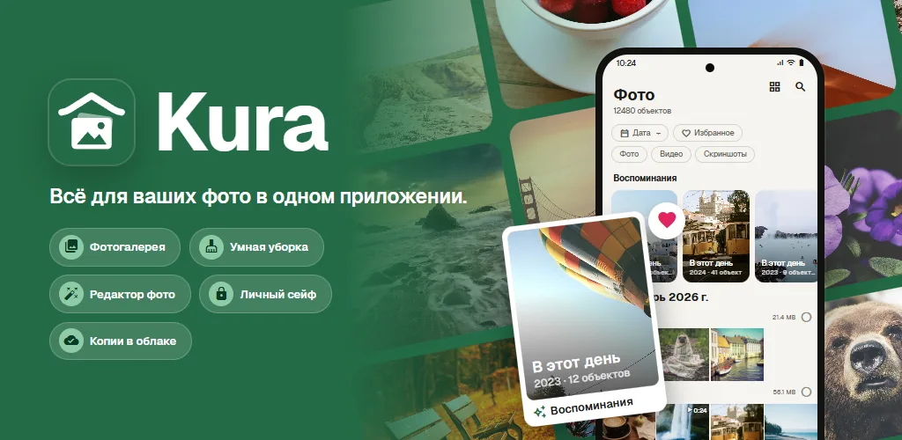
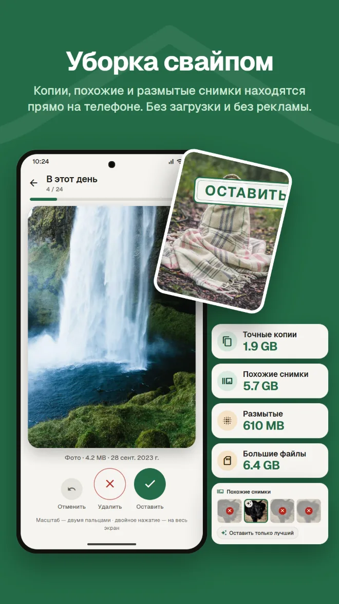
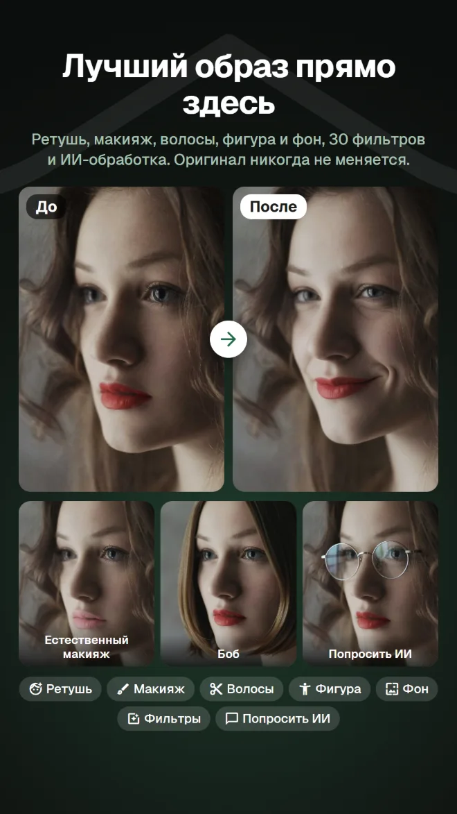
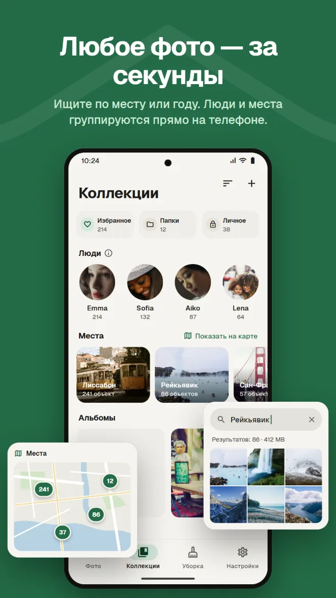
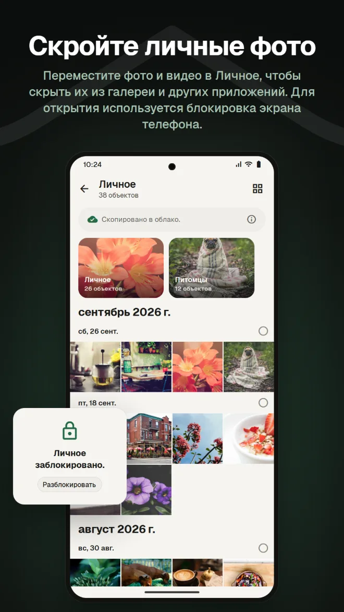
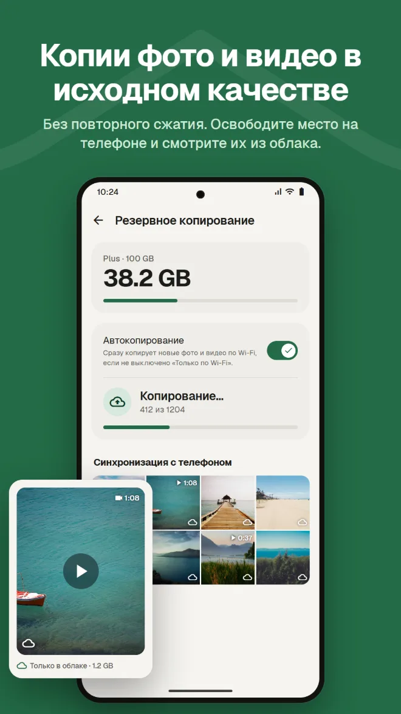
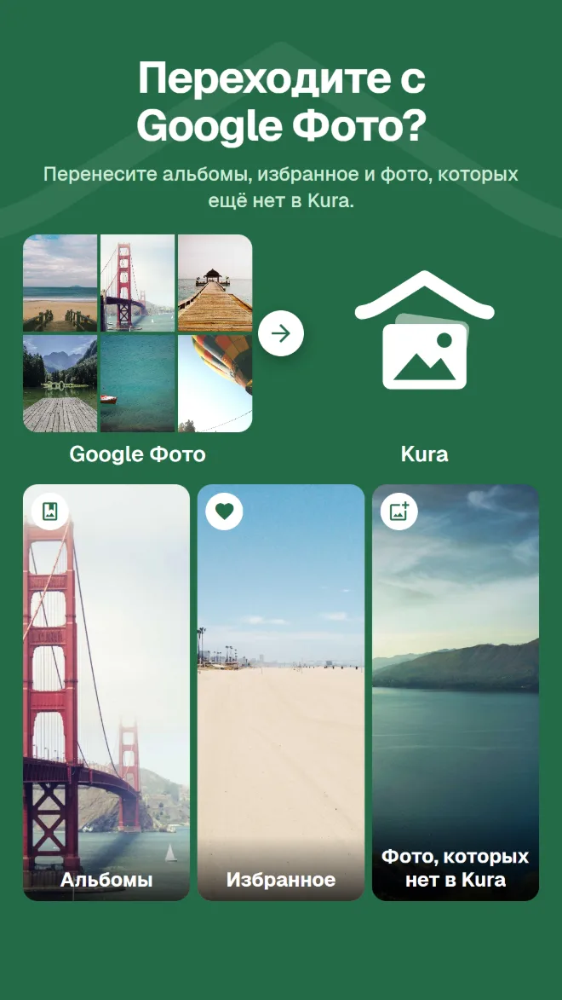

Поиск по содержимому
Находите фото по месту, по тому, что на них, или по тексту на снимке.
Галерея, уборка, ИИ-редактор, личное хранилище, резервные копии и перенос из Google Фото. С Kura не нужно отдельное приложение для каждой задачи.
Android 11 и новее · Просмотр, разбор и удаление бесплатны · Вход через Google

Галерея — чтобы смотреть, чистильщик — чтобы освободить место, ещё одно приложение — для редактирования, ещё один сервис — для бэкапа. И при каждом переходе то же фото приходится искать заново.
Kura делает всё это в одной медиатеке.
Смотрите, разбирайте, редактируйте и сохраняйте в облаке одни и те же фото в одном месте.
От медиатеки до уборки, редактирования, переноса и резервного копирования.
Kura находит на телефоне точные дубликаты, похожие фото, размытые снимки и большие файлы. Свайп вправо — оставить, влево — в корзину, и сразу видно, сколько места освободится.

Ретушь, форма, макияж, волосы и фон, а ещё 30 фильтров, настройки и кадрирование. Есть фильтры, с которыми еда выглядит аппетитно, и настройки фигуры в полный рост. Всегда сохраняется копия, оригинал не меняется.

Сетка по датам и воспоминания этого же дня прошлых лет. Ищите по месту, по тому, что на фото, или по тексту на снимке, а лица группируются по людям прямо на телефоне.

Переместите фото и видео в Личное, чтобы скрыть их из галереи и других приложений. Для открытия используется блокировка экрана телефона.

Резервное копирование фото и видео без пересжатия. Удаляйте с телефона уже сохранённые копии, чтобы освободить место, — они остаются доступны в облаке.

Просто отправьте .zip из Google Takeout через приложение или веб-версию. Kura перенесёт альбомы, избранное и фото, которых в Kura ещё нет. Сервер Kura распаковывает архив в фоне, так что приложение и браузер можно закрыть.

Фото в облаке Kura можно смотреть, упорядочивать, разбирать, редактировать, отправлять и загружать в веб-версии — так же, как в приложении. Избранное синхронизируется с приложением.
Открыть веб-версиюВход через Google · На английском и японском
Всё, что нужно от галереи на каждый день.
Находите фото по месту, по тому, что на них, или по тексту на снимке.
Лица группируются по людям прямо на телефоне, а ваши фото видны на карте.
Фото этого же дня прошлых лет — в начале медиатеки.
Настройка яркости и цвета, кадрирование и кисть, а также фильтры для еды.
Задайте срок действия и пароль и отправьте тем, у кого нет приложения.
Подтверждение блокировкой экрана при каждом открытии. Личное можно и скрыть.
Установите — и ваши фото появятся уже упорядоченными.
Скачайте в Google Play (Android 11 и новее)
Выберите «Разрешить все», чтобы загрузить всю медиатеку
Войдите с аккаунтом Google
Разбирайте сразу, а бэкап добавьте, когда понадобится
Без рекламы. Платить нужно, только если вы пользуетесь облаком.
Всё, что на телефоне
Ежемесячная оплата через Google Play. Отменить можно в любой момент
Google Play показывает цены в вашей местной валюте.
Фото покидают телефон, только когда вы сами делаете что-то, что явно отправляет их куда-то.
Поиск дубликатов, размытия, лиц, объектов и текста работает на телефоне. Ни одно фото не загружается для разбора.
Android спрашивает перед удалением любого файла, а удалённые фото ждут в корзине, пока вы её не очистите.
При входе наш сервер хранит только ID вашего аккаунта Google. Имя и адрес электронной почты никогда не отправляются.
Для ИИ-обработки отправляется только область вокруг лица, и ни фото, ни результат не хранятся на сервере.
Без рекламы · Просмотр, разбор и удаление бесплатны